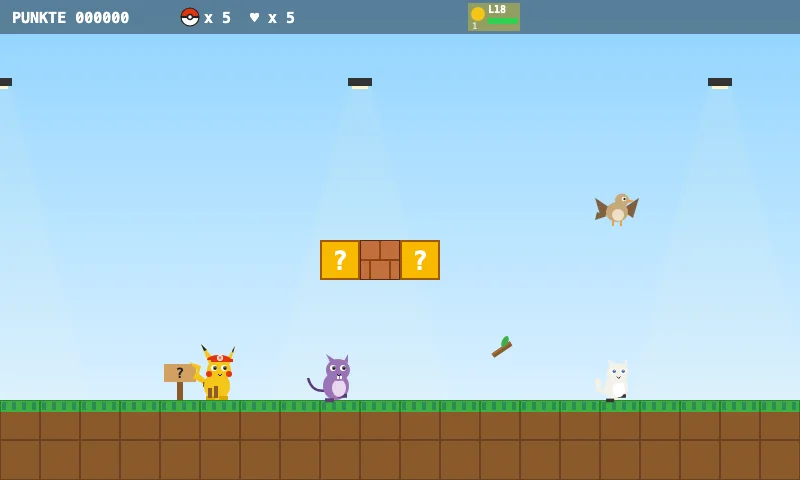
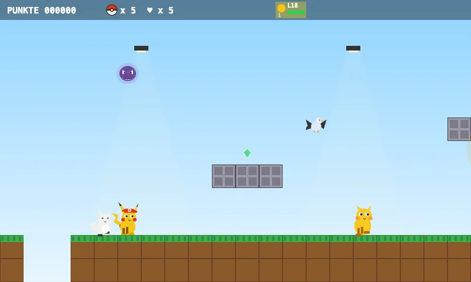
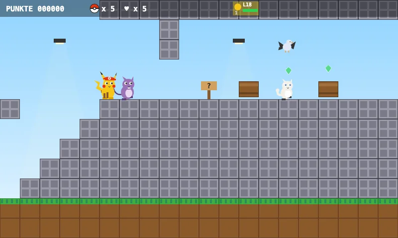
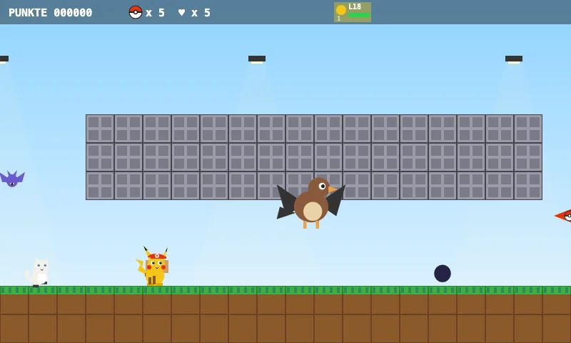
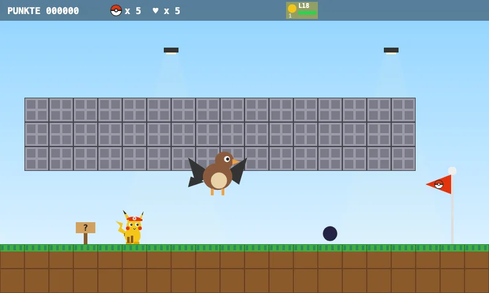

Fase aprovada · 2-4
2-4 Escola Poké
Bem-vindo à Escola Poké!
Junte tubos de ensaio e lápis nas salas de aula.
A sala 4A fica lá em cima – cuidado com as tachinhas!
O diretor está esperando por você no ginásio.
Cinco cenas da fase

O mundo
Bem-vindo à Escola Poké!

Objetivo
Junte tubos de ensaio e lápis nas salas de aula.

Destaque
Sala 4A – Hoje: Aula de Pokémon!

Chefe
Diretor Corujetor — Corujetor é Psíquico e Voador – golpes Elétricos funcionam muito bem!

Reta final
Ginásio: Hora da grande prova!
Validada e concluída pelo bot do jogo.